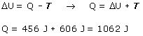

No se sabe si el gas es mono o diatómico,
por tanto se desconoce el calor molar y no se puede hallar directamente
el calor intercambiado en ninguno de los tramos
Trabajo total en el proceso:
T = 606 J + 0 = 606 J
Aplicando el primer principio de la Termodinámica:

Este calor ha sido intercambiado en los dos tramos conjuntamente